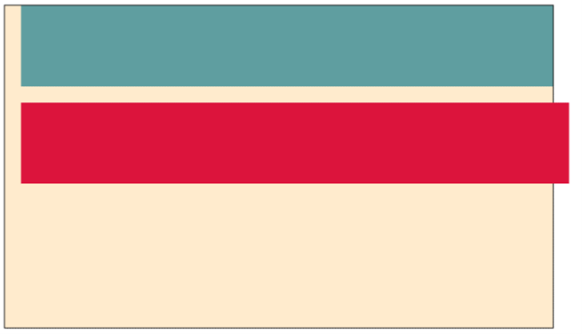

La propiedad width (ancho) del modelo de cajas es la anchura del área de contenido de un elemento y
se encarga también cuando la aplicamos de modificar el ancho a la caja contenedora seleccionada. Cuando
estamos trabajando con cajas siempre es recomendable aplicarle la propiedad “border” (border 1px solid black)
para poder visualizar los cambios que estamos realizando con objetivo de llegar al estilo deseado.
Esta propiedad es aplicable a todas las etiquetas contenedoras de HTML. Los valores de medida
aplicables a esta propiedad pueden ser en px, vw y porcentaje.
En la actualidad siempre se recomiendan usar las medidas vw o porcentaje ya que nos ofrece un
contenedor con medidas adaptativas a las diferentes pantallas de los distintos dispositivos que se
puede visualizar nuestro contenido.
También, debemos saber que existen las propiedades min-width y max-width (luego las describiremos).
Pero, es importante saber que estas propiedades sobrescriben el valor de width.
Con esto se quiere decir que si tenemos un valor width del 100% y luego tenemos algunas de estas
propiedades como por ejemplo max-width 70%, debemos saber que tiene prioridad jerárquica y nuestro
contenedor generara el 70% y no el 100%.
Diferencia entre width: auto y 100%
Se emplea “width:100%” para que un elemento adopte todo el ancho del elemento contenedor que lo contiene.
Se agregará espacio adicional al tamaño del elemento sin tener en cuanta el padre, en otras palabras,
si tenemos alguna modificación sobre margin, padding o border esto puede generar que el contenido se
salga del contenedor principal. En algunas ocasiones esto puede corregirse con la propiedad “border-box”.
Con “width: auto” el contenido se puede expandir o contraer para ocupar el espacio horizontal
disponible dentro del bloque contenedor, si este tiene border o rellenos no se suman al ancho
total del elemento.
Creamos un ejemplo en el que tendremos un contenedor padre con un width detallado y luego crearemos
dos contenedores hijos.
El primer contenedor tendrá el width auto y le agregaremos un margin-left para que separe el contenido
de la caja hija unos 20px de la caja padre hacia la izquierda.
El segundo contenedor tendrá un width 100% y agregaremos la misma propiedad de margin-left. El resultado
sería el siguiente:

Como podemos observar, el valor auto respeta el contenedor padre contrayendo el contenido al moverse 20px
a la izquierda
El valor 100% respeta el movimiento de la caja hacia la izquierda, pero, saliendo del contenedor padre y
respetando su medida de 100% con respecto a su contenedor principal.
Min-Width
Esta propiedad establece un ancho mínimo para el contenedor seleccionado. En el caso que declaremos un
width-min de 30% al contraer el viewport este contenedor se contraerá solo hasta el 30%.
Max-Width
Esta propiedad establece un ancho máximo para el contenedor seleccionado. En el caso que declaremos un
max-width de 50% al extender el viewport este no seguirá aumentando el tamaño del contenedor seleccionado.
Height
La propiedad CSS height (alto) especifica la altura del área de contenido de un elemento. Esta propiedad
tiene los valores aplicables con las reglas muy similares a “width”. Debemos destacar que su única
diferencia al aplicar valores porcentuales al “viewport” en vez de usar “vw” que es para el ancho,
debemos usar la propiedad “vh” que es para el alto. Si prestamos atención las iniciales que le
corresponden a esta propiedad son V y H que están haciendo referencia a “Viewport” y “height”.
Adicionalmente debemos saber que a esta propiedad le podemos pasar los mismos atributos que le damos a
width. A diferencia que en este estilo le estamos aplicando al espacio de alto del contenedor.
Ejemplo Práctico
A continuación, se encuentra el link donde podemos ver la construcción del ejemplo anterior
en un mejor plano.